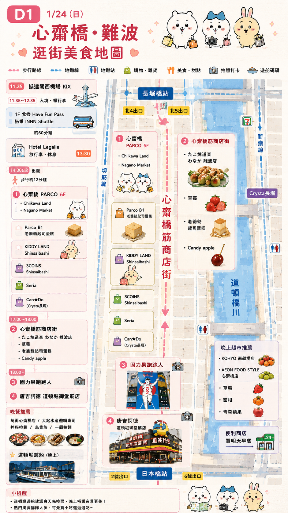
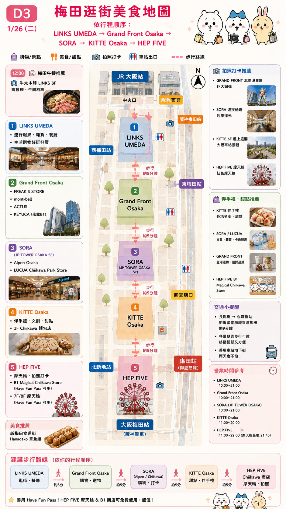
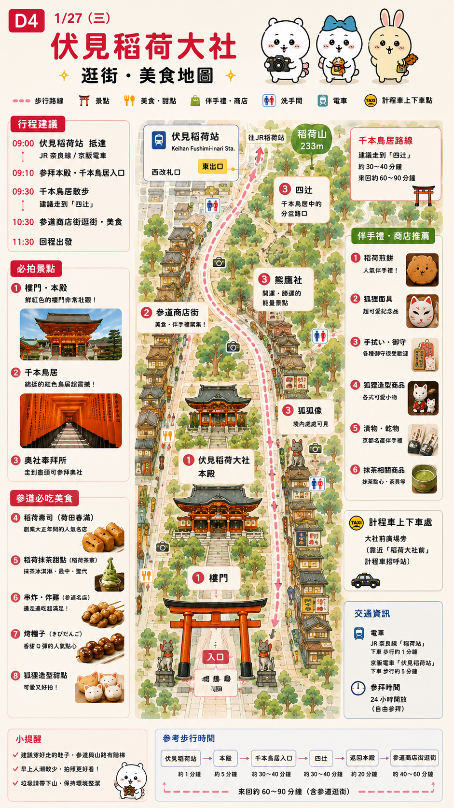
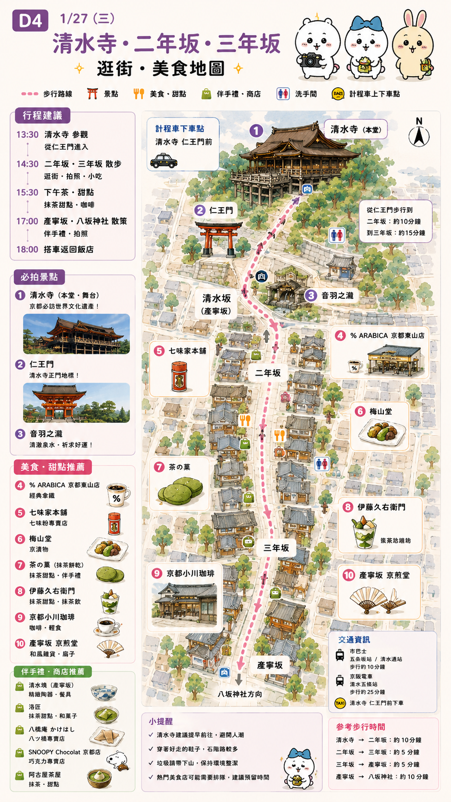
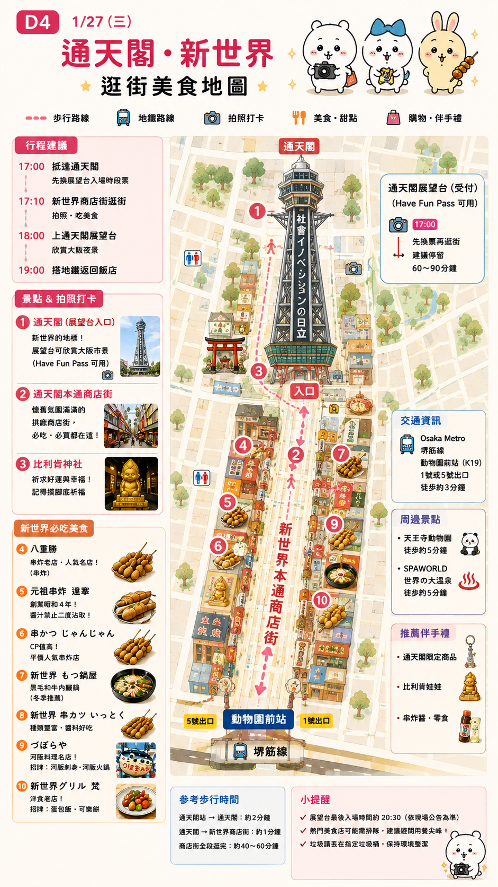
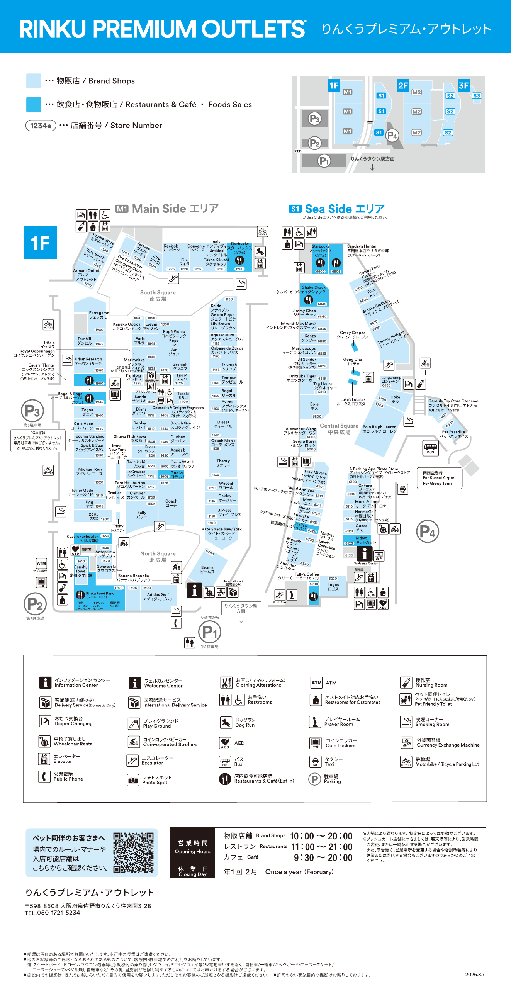
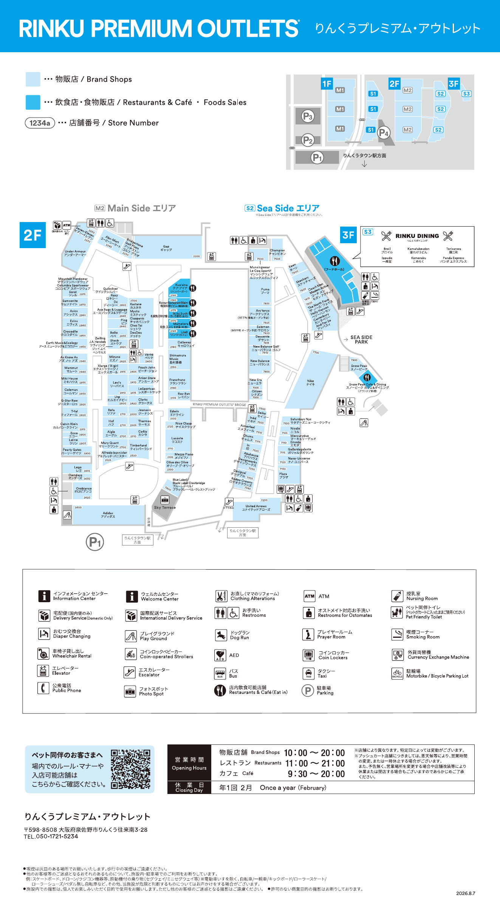

🇯🇵 大阪・京都
2027/1/24 ～ 1/28・5天4夜
3大2小・Family Trip ✨
📋 5 天總行程
🎫 FUN PASS
D1 ✈️ INNN ShuttleD2 🚢 道頓堀遊船D4 🗼 通天閣
D1｜1/24 難波＋千日前飯店 → Namba CITY → WORKMAN → 難波八阪神社 → 千日前商店街 → 晚餐 → 飯店›
Start
🏨 飯店
Hotel Legalie Osaka Shinsaibashi North
Hotel Legalie Osaka Shinsaibashi North
↓ 🚇 🛍️ Namba CITY
👕 WORKMAN
↓ 🚶 ⛩️ 難波八阪神社
↓ 🚶 🛍️ 千日前商店街
↓ 🍜 晚餐
↓ 🏨 回飯店
🗺 難波＋千日前逛街美食地圖

🔍 點圖放大💙 D2｜1/25 一日遊＋大阪南區一日遊 → 道頓堀 → 道頓堀遊船（周遊券） → 道頓堀 → 心齋橋 → PARCO／Chiikawa／KIDDY LAND → 飯店›
Daytime
🚌 一日遊
↓ 📍 道頓堀
↓ 🎫 道頓堀遊船（周遊券）
↓ 🐙 道頓堀
↓ 🚶 🛍️ 心齋橋
PARCO / Chiikawa / KIDDY LAND
↓ 🚶 🏨 回飯店
💚 D3｜1/26 勝尾寺・梅田勝尾寺 → 梅田購物›
Start
勝尾寺
梅田
LINKS UMEDA → Grand Front Osaka → SORA → KITTE Osaka → HEP FIVE
LINKS UMEDA → Grand Front Osaka → SORA → KITTE Osaka → HEP FIVE
HEP FIVE 為逛街行程，不列入 FUN PASS 使用項目。
🧭 勝尾寺🧭 梅田
🗺 梅田逛街美食地圖

🔍 點圖放大🧡 D4｜1/27 京都・通天閣伏見稻荷 → 清水寺 → 二年坂・三年坂 → 祇園 → 通天閣／新世界›
Start
伏見稻荷
清水寺 → 二年坂 → 三年坂 → 祇園
通天閣／新世界（FUN PASS）
① 伏見稻荷

🔍 點圖放大🧭 伏見稻荷② 清水寺・二年坂・三年坂

🔍 點圖放大🧭 清水寺③ 通天閣・新世界

🔍 點圖放大🧭 通天閣💜 D5｜1/28 臨空城・回台灣飯店 → Rinku Premium Outlets → KIX・19:00 起飛›
09:15
飯店出發
10:10
約抵達臨空城，先寄放行李
🛍 主要 Outlet 品牌
HOKAON（位置待確認）ColemanArc'teryxAdidasNikeNew BalanceThe North FaceBEAMS
Rinku Premium Outlets 1F

🔍 點圖放大Rinku Premium Outlets 2F／3F

🔍 點圖放大15:20
開始往 Rinku Town 車站移動
16:00
約抵達 KIX
19:00
班機起飛 ✈️